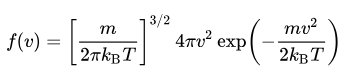
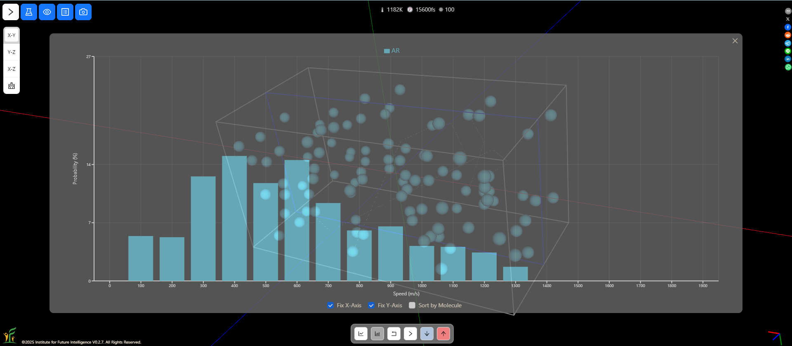
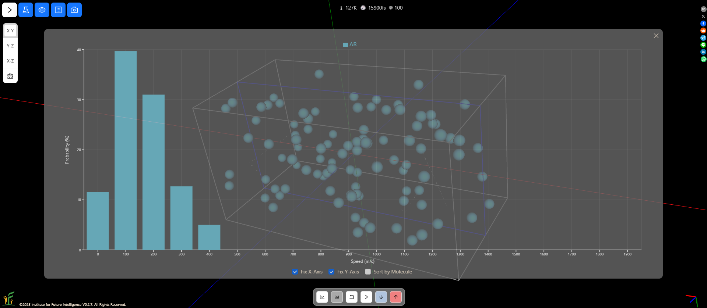
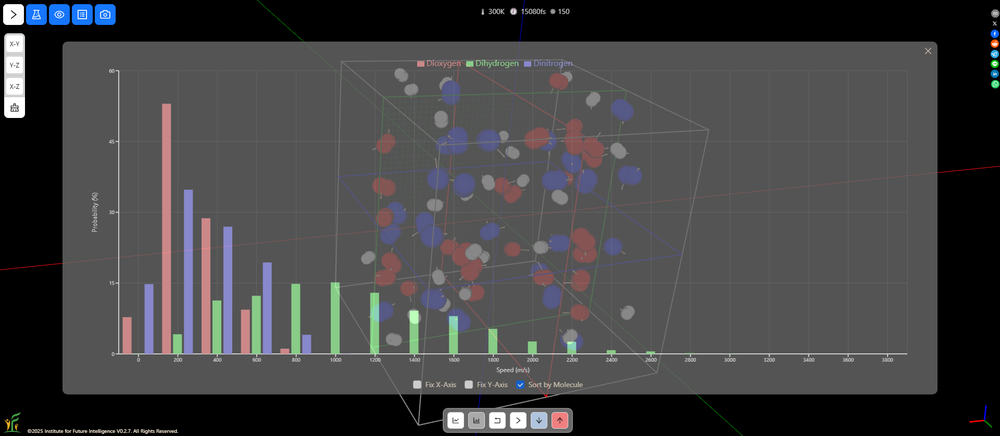
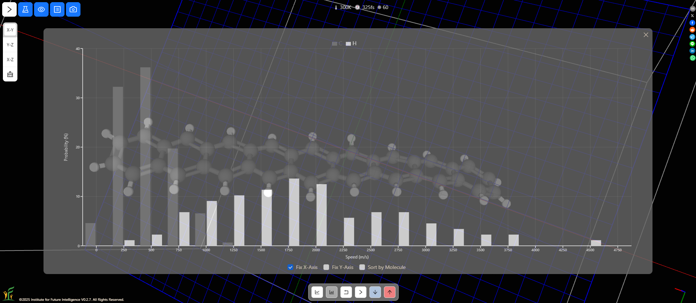

Exploring the Maxwell-Boltzmann Distribution with AIMS
By Charles Xie ✉
Listen to a podcast about this article
The distribution of speeds of atoms and molecules obeys the Maxwell-Boltzmann distribution:

where v is the speed, f(v) is the probability density function, kB is the Boltzmann constant, T is the temperature, and m is the mass of the particle (atom or molecule). If statistical mechanics is not in your wheelhouse, you can play with an interactive molecular dynamics simulation of some argon atoms below to visualize this distribution.
Live model above (view in full screen) — Chrome or Edge recommended
Now, AIMS is not just a visualization tool. It is a complete molecular design, simulation, and analysis environment, which allows you to make deeper scientific inquiry. The following provides a list of things that you can do with AIMS to explore the Maxwell-Boltzmann speed distribution further.
Speed distributions at different temperatures
You can change the temperature in a molecular dynamics simulation and observe how the speed distribution varies as a result. At a higher temperature, there are more molecules that move at higher speeds.


Comparing the speed distributions at high and low temperatures
Speed distributions of different types of molecules
AIMS allows you to sort the speeds by atoms or molecules. You can compare the distributions of different types of molecules as shown in the following screenshot. Molecules with less mass on average move faster than those with more mass.

Comparing the speed distributions of three different molecules H2, N2, and O2
Speed distributions of different atoms of molecules
What about different types of atoms that are part of a molecule? Do they also obey the Maxwell-Boltzmann distribution? You can easily check this out with AIMS. The following screenshot shows that the hydrogen atoms of a long hydrocarbon molecule, on average, move at a higher speed than the carbon atoms, even though the two types are bonded.

Comparing the speed distributions of different atoms of the same molecule